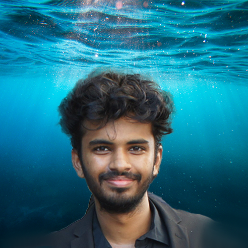

About

I am an undergraduate student at Vellore Institute of Technology - Chennai. My research is centered on enhancing the reasoning and retrieval capabilities and overall performance of small language models while ensuring efficiency.
Additionally, I work on addressing hallucination issues in models across various modalities.
Research Interests
Information Retrieval
Natural Language Processing
AI Safety
Reasoning in Language Models
Research Experience
Research Student
May 2025 - Present
Working on model collapse with Rylan Schaeffer, under Prof. Sanmi Koyejo.
Research Student
March 2025 - Present
Working on the evaluation of agents under Prof. Anand Rao.
Research Student
May 2024 - Present
Mitigating hallucinations in Text2Video models under Prof. Amitava Das.
Research Student
August 2023 - Present
Building efficient and scalable dense retrievers under Prof. Nirav Bhatt.
Publications
The 5th Workshop on Trustworthy NLP @ NAACL 2025
arXiv preprint arXiv:2504.21015
arXiv preprint arXiv:2503.05763
arXiv preprint arXiv:2502.17011
Recent Updates
May 2025
Started new collaboration with Stanford STAIR on Model Collapse.
May 2025
New pre-print on synthetic dataset generation for dense retrieval released on ArXiv.
April 2025
Started working on Agentic Systems and Evaluation with Prof. Anand Rao at CMU.
March 2025
Released Graph Masked Language Models on arXiv.
February 2025
Our dataset paper on Text2Video Hallucinations accepted to TrustNLP@NAACL.